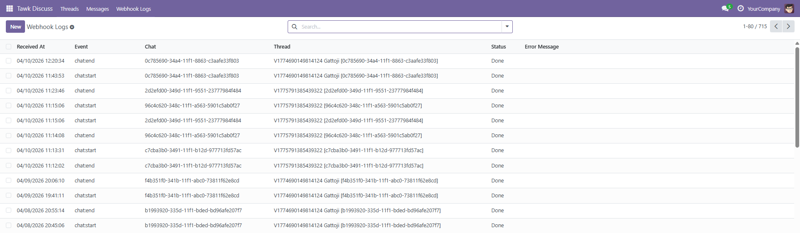
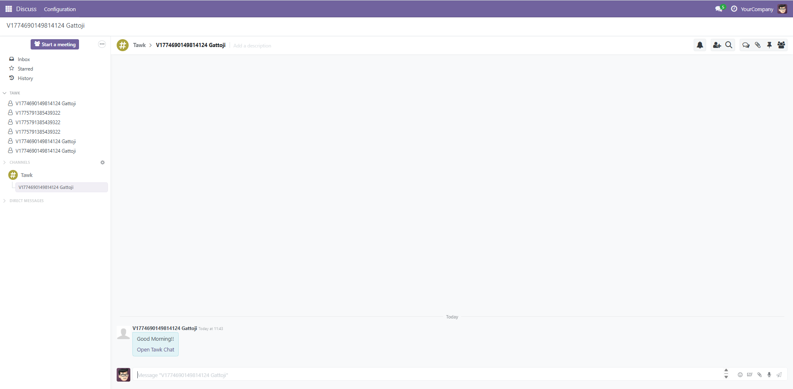
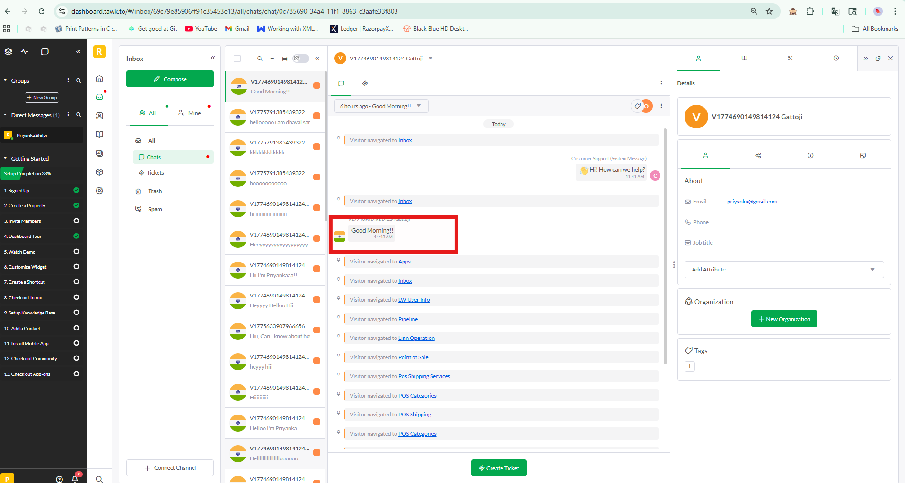

RISHVI LTD
Official Odoo & Linnworks Integration Experts
Official Odoo & Linnworks Integration Experts
Securely integrate CCAvenue payment gateway with Odoo for seamless online transactions
The CCAvenue Connector enables smooth integration between your Odoo website and the CCAvenue payment gateway. It allows businesses to accept secure online payments, ensuring a reliable and efficient checkout experience for customers.
Managing online payments requires a secure and well-configured payment gateway. The CCAvenue Connector simplifies this by allowing businesses to integrate their Odoo system with CCAvenue, ensuring safe and seamless transaction processing directly from the website.
With centralized configuration and easy setup, administrators can manage payment credentials, validate configurations using test mode, and monitor transactions efficiently. This integration enhances customer trust while providing a smooth and secure checkout experience.


Easily configure Tawk.to connection by setting up API Key, Property ID, Channel Name, and Webhook Secret, enabling seamless real-time communication and integration within the system.
Capture and store Tawk.to chat details including sender name, message timestamp, message content, and visitor ID, enabling better tracking, analysis, and customer interaction history.


View detailed webhook logs in Tawk Discuss, capturing events such as chat start and chat end along with timestamps, chat IDs, and thread details for complete interaction tracking.
Create instant Tawk lead notifications directly in the Odoo Discuss module, with a redirect URL to the related Tawk conversation. This ensures every new Tawk chat is visible in Odoo Discuss, so you never miss a lead and can track and follow up efficiently.


View messages received from visitors along with additional insights such as pages visited during the session, helping you understand user behavior and engagement more effectively.
Explore how the CCAvenue Connector works in real-time by connecting your Odoo website with a secure payment gateway. The demo showcases how administrators configure payment settings and how customers complete transactions during checkout.
It highlights the complete workflow including configuration, test mode validation, checkout payment selection, and order confirmation.
Integrate CCAvenue with your Odoo system and streamline your online payment operations. Improve security, reduce complexity, and enhance the checkout experience for your customers.
Our support team is here to assist you with setup, configuration, and customization of the CCAvenue Connector. Reach out to ensure smooth and successful implementation.
© 2026 Rishvi LTD. Your Partner in Odoo Excellence.